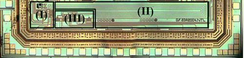

| Publications - Journal Papers <<HOME | ||
| [J20] 2012 | Wei Qi, Fei Qiao, Huazhong Yang, "Distributed Smart Camera Network," Recent Patents on Electrical Engineering, 2012.04, 5(1): 20-25. | |
|
Abstract: Distributed Smart Camera Network can be seen as a network with smart camera around every corner. Smart Camera is an embedded vision system which integrates Sensing Unit, Processing Unit and Communication Unit in one single box. The goal of smart camera is to observe what is happening in the surveillance scene, extract specific information and then transform it to the host or take appropriate action automatically. This paper aims to provide an introduction of smart camera first, including its architecture, platform, challenge etc. We then describe the difficulties when coming to the reality environment, including calibration to get camera topology, camera selection and hand-off for tracking, information fusion, distributed video coding, privacy and security etc. A summary of work on these topics is also given before the conclusion. This paper reviews some promising patents on distributed smart camera network. Keywords: Smart Camera, Distributed smart camera, camera selection and hand-off, camera topology, data fusion, distributed video coding, privacy and security |
||
|
>>DOWNLOAD LINK |
||
| [J19] 2012 | Hongli Gao, Fei Qiao, Huazhong Yang, and Hui Wang, "Design and Implementation of Motion Compensator in Memory Reduced HDTV Decoder with Embedded Compression Engine," MULTIMEDIA TOOLS AND APPLICATIONS, 2012, 56(3): 597-614. | |
|
Abstract In this paper, a low-cost compatible motion compensator is implemented and integrated into a macroblock-level three-stage-pipelined HDTV decoder, in which an embedded compression (EC) engine is realized as well. The decoder with EC engine is designed to reduce the power consumption and memory bandwidth requirement since memory accesses are reduced. In the motion compensator, a boundary judgment scheme for reference pixel fetching is proposed to provide seamless integration in HDTV video decoder for the block-based EC engines. Furthermore, a buffer sharing mechanism is adopted to reduce extra memory requirement involved by EC. The reference pixel fetching unit costs only 17.3 K logic gates when the working frequency is set to 166.7 MHz. On average, when decoding HD1080 video sequence, 30% memory access reduction and 24% memory power consumption saving are achieved when a near lossless EC algorithm is integrated in the video decoder. In other words, the proposed motion compensator makes the EC engine an integral part of a memory reduced decoder without extra cost. Additionally, since the work in this paper is based on EC schemes, the EC design criterion are discussed, and several useful rules on the selection of EC algorithm are addressed for the video decoder of corresponding VLSI architecture. Keywords Video decoder ・Reference pixel fetching ・Motion compensation ・ Embedded compression ・Memory optimization |
||
|
>>DOWNLOAD LINK |
||
| [J18] 2011 | Sisi Tan, Fei Qiao, Huazhong Yang, and Hui Wang, "Design of Reconfigurable Architectures for Multi-Sandards Video Decoder," Recent Patents on Electrical Engineering, 2011, 4(1): 63-70. | |
|
Abstract：Digital video decoding is a typical data-intensive video processing application. Currently, high throughput and real time processing are the fundamental demands of performance for video processing systems. With the development of various video standards, multi-standard applications have become another key feature. Thus, the high performance, low area cost and low power consumption make up of the most important design targets when realizing video processing chips. Reconfigurable hardware architectures have been reviewed in this paper, which could meet the above requirements for multi-standard video decoders. Traditional reconfiguration methods usually decrease area cost by reconfiguring the interconnections among function units. A relatively new approach is dynamic reconfiguration, which could reconfigure hardware resources at runtime. Recently, a new method called Reconfigurable Video Coding (RVC) comes up, which is a library-based method to design a reconfigurable system for multi-standard video decoders. An overview of the methodologies for reconfigurable video processing system is shown in the paper, as well as case studies, which demonstrate the effectiveness of the design flow. Keywords: Reconfigurable Hardware Architecture; Video Decoder; Multi-Standard; Dynamic Reconfiguration; Reconfigurable Interconnection; Reconfigurable Video Coding (RVC).
|
||
| [J17] 2011 | Qi Wei, Fei Qiao, Huazhong Yang, "New Development of Analog-to-Digital Converters," Recent Patents on Electrical Engineering, 2011.09, 4(3): 214-220. | |
|
Abstract: The
operational amplifier is one of the most significant performance
bottlenecks in traditional Analog-to- |
||
| [J16] 2010 | Bingbing Xia, Fei Qiao, Huazhong Yang, and Hui Wang, "Heterogeneous Multi-core Systems for Video Processing," Recent Patents on Electrical Engineering, 2010, 3(3): 200-210. | |
|
Abstract: Multi-core system is the future of the embedded processor design for its power efficiency, multi-thread parallelization and flexibility. Meanwhile, with the improvement of the video processing algorithm, the processing capability requirement is also on the increase to meet such high processing capability requirement, the embedded multi-core processor is developed as an appropriate choice. To better improve the performance of such systems, heterogeneous multi-core is preferred than homogeneous multi-core. For the design of such heterogeneous multi-core systems for video processing, the first and the most important step is to implement the system-level design and this paper gives an overview of such system-level design methodologies and some new methods for both cycle-approximate transaction-level modeling and cycle-accurate transaction-level modeling are given in detail. In addition, the system-level design framework for such systems is proposed and a case study of a heterogeneous multi-core h.264 video decoder shows that it can be used to design such systems effectively. The recent patents used for such designs are also listed accordingly. |
||
| [J15] 2010 | Ni Zhou, Fei Qiao, Huazhong Yang, and Hui Wang, "Effective Memory Architectures of Multi-Processor Systems-on-Chip," Recent Patents on Electrical Engineering, 2010, 3(3): 218-231. | |
|
Abstract―MPSoC is becoming popular in all computing domains. However, the speed gap between processor and memory is increasing due to heavy access contention from multiple processors. Therefore, in MPSoC systems, one of the most critical components is memory systems, which dominate the speed, power, cost,and area. In order to narrow the gap and reduce the costs, two effective memory architectures are adopted in MPSoC-based platforms.rchitecture: cache-based and scratch-pad-memory-based architectures. Cache-based hierarchy, as a traditional technique, is widely employed in general-purpose systems. However, in embedded systems, to meet the rigorous power and cost constraints, scratch-pad-memory-based architecture is preferred due to its flexibility and higher power efficiency. A short review is presented to introduce these two types of memory systems with some useful patents and researches in the field of MPSoC systems. Keywords―MPSoC, memory architecture, cache, scratch pad memory |
||
| [J14] 2010 |
Zhou Ni, QIAO Fei, Tan Sisi,
Li Chang, YANG Huazhong, "Implementation
and Design for Test of a 32-bit MIPS Processor,"
Microelectronics,
vol. 40, No. 6, pp.
782-786, 2010.(Chinese
Version) 周妮，乔飞，谭斯斯，李常，杨华中. 32位MIPS处理器可测性设计与实现. 微电子学, 2010, 40（6）: 782～786 |
|
|
Abstract: This paper presents a 32-bit MIPS processor. To realize load balance and increase system efficiency, custom five-stage pipeline is employed. Furthermore, data bypass and branch prediction based on history records are adopted to solve the hazards of pipelined processor. In order to ensure the reliability and testability, stage decomposition checking is used. Key signals of the pipeline stages are extracted as output signals. Meanwhile, multiple modes are proposed to reduce the area, achieving reusing of pads. In 0.18-μm CMOS technology, Post-layout simulation indicates that the processor achieves a maximum frequency of 60MHz. The die size of processor is 1.15*2.25mm2, including 135k gates. And the total power consumption is 2.8mW/MHz. The chip functions perfectly and switches between multiple modes successfully. Key words: MIPS processor, data bypass, branch prediction, design for test |
||
| [J13] 2010 | Fucheng Liao, Fei Qiao, Ni Zhou, Sisi Tan, and Huazhong Yang, " Testability Design of MPEG-2 Decoder Chip Based on Module Partition," Video Engineering, vol. 34, No. 11, pp. 35-39, 2010. (Chinese Version) | |
|
Abstract-This paper presents a module-based methodology to enhance the testability of the MPEG-2 decoder, with JTAG and Built-in Self-Test (BIST) technology employed. Based on the features of the architecture of MPEG-2 decoder, modules are divided into three categories: memory modules, signal-correlated modules, and signal-non-correlated modules. Based on the characteristics of modules, different test pattern generators are proposed, and different modules are tested in parallel. The test results show that the presented design can promote the fault coverage rate from 81% to 95.1%, meanwhile the test time is decreased to 0.625%, comparing with the same decoder system without thinking about testability. Finally, the design for test has passed the verification FPGA verification. |
||
|
>>DOWNLOAD LINK |
||
| [J12] 2010 | Fei Qiao, Dingli Wei, Huazhong Yang, and Hui Wang, "Design of a Highly Parallel and Double-Level Pipelined CAVLC Encoder for H.264," ACTA ELECTRONICA SINICA, 2010, 38(7): 1705-1710. | |
|
Abstract: This paper presents the design of a CAVLC encoder for H.264 featuring a highly parallel and double-level pipelined architecture.In order to overcome the speed bottleneck of one coefficient per cycle during scanning, the proposed design uses four-channel parallel processing instead of serial scanning. And the delays of all stages in the pipelined architecture are averaged by FIFOs, which achieves a high efficiency for the entire pipeline. The pipelined structure is also widely used in sub-modules for higher throughput. Based on 0.18µm CMOS technology, the proposed architecture is synthesized into 20685 logic gates and achieved average 27M blocks/s at 166.7MHz frequency, and even meets the requirements of real-time processing of digital cinema video (4096×2048@30fp). The date throughput of the proposed architecture is 3.46 times of that of the previous reported work with acceptable increase in area.) |
||
| [J11] 2009 | Hongli Gao, Fei Qiao, Huazhong Yang, and Hui Wang, "Memory Reduction Techniques for HDTV Video Decoders," Recent Patents on Electrical Engineering, 2009, 2(3): 215-225. | |
|
Abstract: In this work,
two schemes are proposed to improve the memory performance in video
decoder systems. A novel lossless frame recompression method and an effcient frame storage mapping strategy are employed to reduce the
Read/Write and Row Activation operations of the external memory during
video decoding processes. Verified with MPEG-2 based HDTV video decoder,
the number of bytes writing to the memory is reduced by about 50% in
comparison with the conventional decoder using the embedded frame
recompression algorithm, without video |
||
| [J10] 2009 |
Fei Qiao, Huazhong Yang, WANG Hui, "Low-standby-current and high-speed SAFF with improved conditional-precharge modules," International Journal of Electronics, June 2009, 96(6): 639�C656. |
|
|
Abstract:
A new low-power and high-speed sense-amplifier-based flip-flop with
improved conditional-precharge modules (LSCP-SAFF) is proposed.
By employing a
|
||
| [J9] 2009 |
Hongli Gao, Fei Qiao, Huazhong Yang, "A Lossless Memory Reduction and Efficient Frame Storage Architecture for HDTV Video Decoder," Journal of Applied Sciences - Electronics and Information Engineering, 2009, 27(1): 67-73. |
|
|
Abstract:
In this work, two schemes are proposed to improve the memory
performance in video decoder systems. A novel lossless frame
recompression method and an effcient frame storage mapping
strategy are employed to reduce the Read/Write and Row
Activation operations of the external memory during video
decoding processes. Verified with MPEG-2 based HDTV video
decoder, the number of bytes writing to the memory is reduced by
about 50% in comparison with the conventional decoder using the
embedded frame recompression algorithm, without video quality
degradation. Moreover, the reading bytes from on-chip memory for
motion compensation are not increased. Additionally, by storing
the luma and chroma components of one macroblock in one row of
different banks, as well as the ten neighboring macroblocks, the
logic Row Activation number can be cut down to nearly 5% of the
conventional linear storage scheme. A modified and/or expanded version of a paper originally published at the International Conference on Audio, Language and Image Processing held in July 2008, Shanghai, China, selected based on further evaluation and peer-review. |
||
| [J8] 2008 |
Li Jian, Qiao Fei, Luo Rong, Yang Huazhong, "A SRAM-less Deblocking Filter in H.264/AVC," Journal of Electronics & Information Technology, 2008, 30(8): 2012-2016. |
|
|
Abstract: A new VLSI architecture of deblocking filter is developed for H．264／AVC system． In the presented architecture， a novel filter scheduling is proposed to reduce the size of local data buffer， and an enhanced data reuse technology is adopted to reduce the number of external memory access， thus the speed of filtering process is significantly improved well． What’s more， this architecture employs no on-chip SRAM， SO there is no on-chip SRAM acce88．Simulation results show that the new filter can support real-time deblocking for HDTV videoapplication when it works at 100 MHz． The synthesized logic gate count is only 16．8k with 0．18um CMOS technology． Key words：H．264／AVC； Deblocking filter； Data reuse； SRAM (Static Random Access Memory)； VLSI design |
||
| [J7] 2008 |
Zhang Di, Quan Jinguo, Qiao Fei, Luo Rong, Yang Huazhong, "A Reconfigurable AHB Interface Component for SOC," Journal of Electronics & Information Technology, 2008, 30(8): 2008-2011. |
|
|
Abstract:
In this paper， a
reconfigurable AHB interface component wag designed． This
component is for AHB slave devices in SOC． Various types of data
interfaces such as register， interrupt， SRAM and FIFO are
provided with high configurability． The performance and
reusability are both considered． This AHB interface component
was successfully applied to chips for DAB and DRM receivers． A
typical application of this component in DRM receiver has an
area of 0．078ram2 in 0．18um CMOS process． Key words： SOC； Interface component； AMBA； AHB |
||
| [J6] 2008 | QIAO Fei, YANG Huazhong, HUANG Gang and WANG Hui, “Implementation of Low-Swing Differential Interface Circuits for High-Speed On-Chip Asynchronous Interconnection,” Science in China Ser. F: Information Science, 2008, 51(7): 975-984. | |
| [J5] 2008 |
QIAO Fei, YANG Huazhong, HUANG Gang and WANG Hui, “Implementation of Low-Swing Differential Interface Circuits for High-Speed On-Chip Asynchronous Interconnection,” Science in China Ser. E: Information Science, 2008, 38(4):627-636 (Chinese Version) |
|
|  |
Abstract: A novel low-swing interface circuit for high-speed on-chip asynchronous interconnection is proposed in this paper. It takes a differential level-triggered latch to recover digital signal with ultra low-swing voltage less than 50mV, and the driver part of the interface circuit is optimized for low power using the Driver-Array method. With a capacity to work up to 500MHz, the proposed circuit, which is simulated and fabricated using SMIC 0.18-μm 1.8-V digital CMOS technology, consumes less power than previously reported designs. Key words: low power circuit, low-swing interface, differential signaling, tapered-buffer, interconnect, asynchronous circuit |
|
| [J4] 2007 |
Qiao Fei, Yang Huazhong, Gao Hongli and Wang Hui, “Timing Improvements of Conditional-Precharge Sense-Amplifier-Based Flip-Flop,” Chinese Journal of Electronics (CJE), 2007,16(2):231-235 |
|
|
Abstract: A new low-power and high-speed conditional-precharge sense-amplifier-based flip-flop (nCP-SAFF) is proposed. By using the differential clocked CMOS (C2MOS) latch and a novel timing improvement method to improve timing performance, the nCP-SAFFs can achieve a much shorter input to output delay (D-to-Q delay) and more symmetrical rising/falling delays than those of the original conditional-precharge sense-amplifier-based flip-flops (CP-SAFF). Post-layout simulation results show that the nCP-SAFFs, compared with the widely used conventional DFF,do not suffer neither timing nor area penalties and have achieved up to 34% of power reduction ratio and 38% of power-delay-product (PDP) reduction ratio, respectively. And the nCP-SAFF is less noise sensitive because of its differential structure. Keywords: Low power, timing constraints, conditional-precharge, DFF |
||
| [J3] 2007 |
Fei Qiao, Huazhong Yang, Dingli Wei, Hui Wang, "MODIFIED CONDITIONAL-PRECHARGE SENSE-AMPLIFIER-BASED FLIP-FLOP WITH IMPROVED SPEED," Journal of Circuits, Systems and Computers (JCSC), 2007, 16(2): 199-210. |
|
|
Abstract: A modified version of conditional-precharge sense-amplifier-based flip-flop (mCP-SAFF)is proposed. By using the differential clocked CMOS (C2MOS) latch with one shared output holder and the conditional-precharge modules to simplify the sense-amplifier latch,the mCP-SAFF can achieve a much shorter input to output delay (D-to-Q delay) and more symmetrical rising/falling delays than those of the original conditional-precharge sense-amplifier-based flip-flops (CP-SAFF). Post-layout simulation results show that the mCP-SAFF, compared with the widely used conventional DFF, does not suffer neither timing nor area penalties and have achieved up to 34% of power reduction ratio and 33% of power-delay-product (PDP) reduction ratio, respectively. And the mCP-SAFF is comparable to the prevailing DFFs with regard to noise immunity performance. Keywords: Low power; timing constraints; conditional-precharge; DFF. |
||
|
Copyright © 2006 - 2008 Fei Qiao, Tsinghua University, Beijing, P.R.C. All rights reserved Last Update : 2012-04-30 |
||